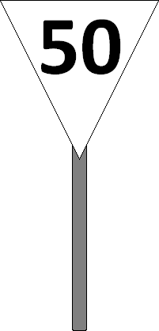
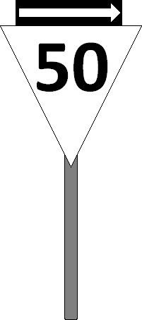
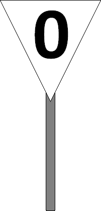

Signalbuch-Online
Signal Lf 4 – Geschwindigkeitstafel (DV 301)
Richtlinien und Bestimmungen zur Anwendung und Bedeutung des Signals Lf 4 bei Geschwindigkeitswechseln und Langsamfahrstellen.
(1)
Bedeutung
Die angezeigte Geschwindigkeit darf nicht überschritten werden.
(2)
Beschreibung
Eine auf der Spitze stehende dreieckige, weiße Tafel mit schwarzem Rand zeigt eine schwarze Geschwindigkeitszahl.
Bei beschränktem Raum kann die Dreieckspitze nach oben zeigen.

Bei beschränktem Raum kann die Dreieckspitze nach oben zeigen.

(3)
Durch das Signal Lf 4 werden angezeigt:
Geschwindigkeitswechsel (a): Die Geschwindigkeitswechsel der im VzG festgelegten und, soweit zutreffend, im Fahrplan bekannt gegebenen Geschwindigkeiten für die Streckengleise und die durchgehenden Hauptgleise der Bahnhöfe.
Bahnübergänge (b): Geschwindigkeitsbeschränkungen für das Befahren von nicht technisch gesicherten Bahnübergängen.
Bahnübergänge (b): Geschwindigkeitsbeschränkungen für das Befahren von nicht technisch gesicherten Bahnübergängen.
(4)
Anwendung
Ist die Geschwindigkeit herabzusetzen, wird das Signal Lf 4 entsprechend dem Bremsweg der betreffenden Strecke vor der durch Signal Lf 5 gekennzeichneten Stelle des Geschwindigkeitswechsels aufgestellt.
Das Signal Lf 5 kann bis auf Weiteres nicht aufgestellt sein.
Der Eisenbahninfrastrukturunternehmer darf in zwingenden Fällen zulassen, dass das Signal Lf 4 in einem kürzeren Abstand als dem Bremsweg der Strecke aufgestellt wird, wenn der verkürzte Abstand mindestens dem für die Herabsetzung der Geschwindigkeit tatsächlich erforderlichen Bremsweg entspricht.
Der Mindestabstand beträgt jedoch auf Hauptbahnen 300 m und auf Nebenbahnen 150 m.
Auf den verkürzten Abstand wird im VzG und im Fahrplan hingewiesen.
Bei einer Geschwindigkeitserhöhung steht das Signal Lf 4 an einer Stelle des Geschwindigkeitswechsels.
Besondere Regelungen für Bahnhöfe, Abzweigstellen und nicht technisch gesicherte Bahnübergänge sind in den Absätzen 5 und 6 genannt.
Das Signal Lf 5 kann bis auf Weiteres nicht aufgestellt sein.
Der Eisenbahninfrastrukturunternehmer darf in zwingenden Fällen zulassen, dass das Signal Lf 4 in einem kürzeren Abstand als dem Bremsweg der Strecke aufgestellt wird, wenn der verkürzte Abstand mindestens dem für die Herabsetzung der Geschwindigkeit tatsächlich erforderlichen Bremsweg entspricht.
Der Mindestabstand beträgt jedoch auf Hauptbahnen 300 m und auf Nebenbahnen 150 m.
Auf den verkürzten Abstand wird im VzG und im Fahrplan hingewiesen.
Bei einer Geschwindigkeitserhöhung steht das Signal Lf 4 an einer Stelle des Geschwindigkeitswechsels.
Besondere Regelungen für Bahnhöfe, Abzweigstellen und nicht technisch gesicherte Bahnübergänge sind in den Absätzen 5 und 6 genannt.
(5)
Geschwindigkeitswechsel im Streckengleis / Bahnhof
Ein zu signalisierender Geschwindigkeitswechsel liegt auch vor:
(a) Streckenverzweigung: An den Abzweigstellen und Streckenverzweigungen in Bahnhöfen, wenn beim Übergang von einer Strecke auf eine andere eine Geschwindigkeitsänderung zu beachten ist.
(b) Ende des anschließenden Weichenbereichs: Am Ende einer durch ein Hauptsignal angezeigten Geschwindigkeitsbeschränkung.
Das Signal Lf 4 ist in diesen Fällen hinter der letzten auf der Abzweigstelle oder bei der Ausfahrt befahrenen Weiche aufzustellen, ausgenommen dann, wenn eine Geschwindigkeitsbeschränkung anzuzeigen ist.
Das in diesem Falle vor der letzten auf der Abzweigstelle oder bei der Ausfahrt befahrenen Weiche aufgestellte Signal Lf 4 ist durch einen weißen Richtungspfeil mit schwarzem Rand zu ergänzen, um anzuzeigen, für welche Fahrtrichtung die Geschwindigkeitsbeschränkung gilt.
(a) Streckenverzweigung: An den Abzweigstellen und Streckenverzweigungen in Bahnhöfen, wenn beim Übergang von einer Strecke auf eine andere eine Geschwindigkeitsänderung zu beachten ist.
(b) Ende des anschließenden Weichenbereichs: Am Ende einer durch ein Hauptsignal angezeigten Geschwindigkeitsbeschränkung.
Das Signal Lf 4 ist in diesen Fällen hinter der letzten auf der Abzweigstelle oder bei der Ausfahrt befahrenen Weiche aufzustellen, ausgenommen dann, wenn eine Geschwindigkeitsbeschränkung anzuzeigen ist.
Das in diesem Falle vor der letzten auf der Abzweigstelle oder bei der Ausfahrt befahrenen Weiche aufgestellte Signal Lf 4 ist durch einen weißen Richtungspfeil mit schwarzem Rand zu ergänzen, um anzuzeigen, für welche Fahrtrichtung die Geschwindigkeitsbeschränkung gilt.

Bei einem rückstrahlenden Signal Lf 4 muss auch der Richtungspfeil rückstrahlend sein.(6)
Signal Lf 4 an nicht technisch gesicherten Bahnübergängen
Die Geschwindigkeitstafel ist vor nicht technisch gesicherten Bahnübergängen aufzustellen, wenn die Geschwindigkeit für das Befahren des Bahnübergangs herabgesetzt werden muss.
Das Signal Lf 4 wird in diesem Falle stets im Abstand des für die Herabsetzung der Geschwindigkeit tatsächlich erforderlichen Bremsweges, mindestens jedoch 150 m vor dem Bahnübergang oder vor dem Signal Lf 5 aufgestellt.
Hinsichtlich der Vereinigung mit Signal Pf 2 wird auf Abschnitt 10 des Signals Pf 2 verwiesen.
Gilt das Signal Pf 2 für mehrere Bahnübergänge, ist auch die durch das Signal Lf 4 angezeigte Geschwindigkeitsbeschränkung für die am Signal Pf 2 angegebene Anzahl von Bahnübergängen gültig.
Die Geschwindigkeitsbeschränkung muss erreicht sein, sobald das erste Fahrzeug das Signal Lf 5, wo dieses nicht aufgestellt ist, den Bahnübergang erreicht hat. Sie ist beizubehalten, bis das erste Fahrzeug den Bahnübergang verlassen hat.
Die Geschwindigkeitserhöhung hinter dem Bahnübergang wird nicht durch das Signal Lf 4 angezeigt.
Wo in Ausnahmefällen vor dem Befahren eines nicht technisch gesicherten Bahnübergangs zu halten ist, zeigt das Signal Lf 4 die Zahl 0. Außerdem ist das Signal Lf 5 aufzustellen.
Das Signal Lf 4 wird in diesem Falle stets im Abstand des für die Herabsetzung der Geschwindigkeit tatsächlich erforderlichen Bremsweges, mindestens jedoch 150 m vor dem Bahnübergang oder vor dem Signal Lf 5 aufgestellt.
Hinsichtlich der Vereinigung mit Signal Pf 2 wird auf Abschnitt 10 des Signals Pf 2 verwiesen.
Gilt das Signal Pf 2 für mehrere Bahnübergänge, ist auch die durch das Signal Lf 4 angezeigte Geschwindigkeitsbeschränkung für die am Signal Pf 2 angegebene Anzahl von Bahnübergängen gültig.
Die Geschwindigkeitsbeschränkung muss erreicht sein, sobald das erste Fahrzeug das Signal Lf 5, wo dieses nicht aufgestellt ist, den Bahnübergang erreicht hat. Sie ist beizubehalten, bis das erste Fahrzeug den Bahnübergang verlassen hat.
Die Geschwindigkeitserhöhung hinter dem Bahnübergang wird nicht durch das Signal Lf 4 angezeigt.
Wo in Ausnahmefällen vor dem Befahren eines nicht technisch gesicherten Bahnübergangs zu halten ist, zeigt das Signal Lf 4 die Zahl 0. Außerdem ist das Signal Lf 5 aufzustellen.

(7)
Geschwindigkeit an Hauptsignalen
Das Signal Lf 4 wird auch angewandt zur Ankündigung eines Hauptsignals, durch das auch bei dem Signal Hp 1 eine Geschwindigkeitsbeschränkung innerhalb des anschließenden Weichenbereichs vorgeschrieben wird.
Das Signal Lf 4 wird dann in Höhe des Vorsignals aufgestellt. Zwischen dem Vorsignal und dem Ende des Weichenbereichs darf dann kein weiteres Signal Lf 4 aufgestellt werden.
Das Signal Lf 4 wird dann in Höhe des Vorsignals aufgestellt. Zwischen dem Vorsignal und dem Ende des Weichenbereichs darf dann kein weiteres Signal Lf 4 aufgestellt werden.
(8)
Aufstellung
Die Geschwindigkeitstafel ist ortsfest und steht unmittelbar rechts, auf zweigleisiger Strecke für Fahrten entgegen der gewöhnlichen Fahrtrichtung unmittelbar links neben dem zugehörigen Gleis.
(9)
Beleuchtung
Das Signal Lf 4 wird bei Dunkelheit nicht beleuchtet, kann aber rückstrahlend sein.
Info
Verweis zum Fachthema "Langsamfahrstellen"
Aufbau und Verhaltensweisen an dauerhaften und vorübergehenden Langsamfahrstellen.